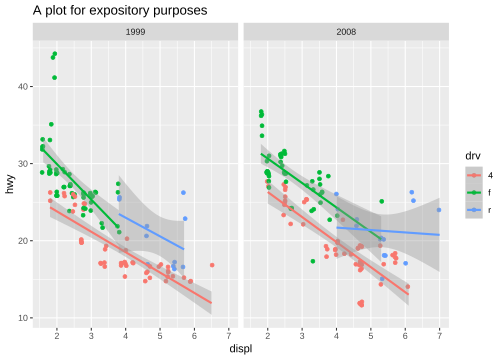
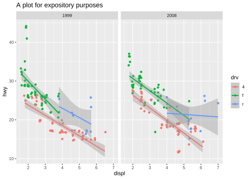

Code
p <- ggplot(mpg, aes(displ, hwy, color = drv)) +
geom_point(position = "jitter") +
geom_smooth(method = "lm", formula = y ~ x) +
facet_wrap(vars(year)) +
ggtitle("A plot for expository purposes")
pggproto 对象
p_built <- ggplot_build(p)
p_built $data %>% map(head) %>% map(as_tibble)
#> [[1]]
#> # A tibble: 6 × 10
#> colour x y PANEL group shape size fill alpha stroke
#> <chr> <dbl> <dbl> <fct> <int> <dbl> <dbl> <lgl> <lgl> <dbl>
#> 1 #00BA38 1.76 28.8 1 2 19 1.5 NA NA 0.5
#> 2 #00BA38 1.76 29.1 1 2 19 1.5 NA NA 0.5
#> 3 #00BA38 2.01 30.7 2 2 19 1.5 NA NA 0.5
#> 4 #00BA38 2.01 30.2 2 2 19 1.5 NA NA 0.5
#> 5 #00BA38 2.80 26.1 1 2 19 1.5 NA NA 0.5
#> 6 #00BA38 2.82 25.8 1 2 19 1.5 NA NA 0.5
#>
#> [[2]]
#> # A tibble: 6 × 14
#> colour x y ymin ymax se flipped_aes PANEL group fill linewidth
#> <chr> <dbl> <dbl> <dbl> <dbl> <dbl> <lgl> <fct> <int> <chr> <dbl>
#> 1 #F8766D 1.8 24.3 23.1 25.6 0.625 FALSE 1 1 grey60 1
#> 2 #F8766D 1.86 24.2 22.9 25.4 0.612 FALSE 1 1 grey60 1
#> 3 #F8766D 1.92 24.0 22.8 25.2 0.598 FALSE 1 1 grey60 1
#> 4 #F8766D 1.98 23.9 22.7 25.0 0.585 FALSE 1 1 grey60 1
#> 5 #F8766D 2.04 23.7 22.6 24.9 0.572 FALSE 1 1 grey60 1
#> 6 #F8766D 2.10 23.5 22.4 24.7 0.559 FALSE 1 1 grey60 1
#> # ℹ 3 more variables: linetype <dbl>, weight <dbl>, alpha <dbl>
p_built $layout
#> <ggproto object: Class Layout, gg>
#> coord: <ggproto object: Class CoordCartesian, Coord, gg>
#> aspect: function
#> backtransform_range: function
#> clip: on
#> default: TRUE
#> distance: function
#> expand: TRUE
#> is_free: function
#> is_linear: function
#> labels: function
#> limits: list
#> modify_scales: function
#> range: function
#> render_axis_h: function
#> render_axis_v: function
#> render_bg: function
#> render_fg: function
#> setup_data: function
#> setup_layout: function
#> setup_panel_guides: function
#> setup_panel_params: function
#> setup_params: function
#> train_panel_guides: function
#> transform: function
#> super: <ggproto object: Class CoordCartesian, Coord, gg>
#> coord_params: list
#> facet: <ggproto object: Class FacetWrap, Facet, gg>
#> compute_layout: function
#> draw_back: function
#> draw_front: function
#> draw_labels: function
#> draw_panels: function
#> finish_data: function
#> init_scales: function
#> map_data: function
#> params: list
#> setup_data: function
#> setup_params: function
#> shrink: TRUE
#> train_scales: function
#> vars: function
#> super: <ggproto object: Class FacetWrap, Facet, gg>
#> facet_params: list
#> finish_data: function
#> get_scales: function
#> layout: data.frame
#> map_position: function
#> panel_params: list
#> panel_scales_x: list
#> panel_scales_y: list
#> render: function
#> render_labels: function
#> reset_scales: function
#> resolve_label: function
#> setup: function
#> setup_panel_guides: function
#> setup_panel_params: function
#> train_position: function
#> super: <ggproto object: Class Layout, gg>
p_built $plot
p_gtable <- ggplot_gtable(p_built)
p_gtable
#> TableGrob (17 x 17) "layout": 25 grobs
#> z cells name
#> 1 0 ( 1-17, 1-17) background
#> 2 1 (10-10, 7- 7) panel-1-1
#> 3 1 (10-10,11-11) panel-2-1
#> 4 3 ( 8- 8, 7- 7) axis-t-1-1
#> 5 3 ( 8- 8,11-11) axis-t-2-1
#> 6 3 (11-11, 7- 7) axis-b-1-1
#> 7 3 (11-11,11-11) axis-b-2-1
#> 8 3 (10-10,10-10) axis-l-1-2
#> 9 3 (10-10, 6- 6) axis-l-1-1
#> 10 3 (10-10,12-12) axis-r-1-2
#> 11 3 (10-10, 8- 8) axis-r-1-1
#> 12 2 ( 9- 9, 7- 7) strip-t-1-1
#> 13 2 ( 9- 9,11-11) strip-t-2-1
#> 14 4 ( 7- 7, 7-11) xlab-t
#> 15 5 (12-12, 7-11) xlab-b
#> 16 6 (10-10, 5- 5) ylab-l
#> 17 7 (10-10,13-13) ylab-r
#> 18 8 (10-10,15-15) guide-box-right
#> 19 9 (10-10, 3- 3) guide-box-left
#> 20 10 (14-14, 7-11) guide-box-bottom
#> 21 11 ( 5- 5, 7-11) guide-box-top
#> 22 12 (10-10, 7-11) guide-box-inside
#> 23 13 ( 4- 4, 7-11) subtitle
#> 24 14 ( 3- 3, 7-11) title
#> 25 15 (15-15, 7-11) caption
#> grob
#> 1 rect[plot.background..rect.705]
#> 2 gTree[panel-1.gTree.585]
#> 3 gTree[panel-2.gTree.600]
#> 4 zeroGrob[NULL]
#> 5 zeroGrob[NULL]
#> 6 absoluteGrob[GRID.absoluteGrob.604]
#> 7 absoluteGrob[GRID.absoluteGrob.604]
#> 8 zeroGrob[NULL]
#> 9 absoluteGrob[GRID.absoluteGrob.612]
#> 10 zeroGrob[NULL]
#> 11 zeroGrob[NULL]
#> 12 gtable[strip]
#> 13 gtable[strip]
#> 14 zeroGrob[NULL]
#> 15 titleGrob[axis.title.x.bottom..titleGrob.667]
#> 16 titleGrob[axis.title.y.left..titleGrob.670]
#> 17 zeroGrob[NULL]
#> 18 gtable[guide-box]
#> 19 zeroGrob[NULL]
#> 20 zeroGrob[NULL]
#> 21 zeroGrob[NULL]
#> 22 zeroGrob[NULL]
#> 23 zeroGrob[plot.subtitle..zeroGrob.702]
#> 24 titleGrob[plot.title..titleGrob.701]
#> 25 zeroGrob[plot.caption..zeroGrob.703]ggproto参考 ggplot2-book.org/internals#sec-ggproto
library(ggplot2)
library(grid)
# 自定义 GeomSignif 对象
GeomSignif <- ggproto(`_class` = "GeomSignif",
`_inherits` = Geom,
required_aes = c("x", "y"),
default_aes = aes(
comparisons = NULL, step_increase = 0.1,
map_signif_level = TRUE, test = "t.test",
test.args = list(), y_position = NULL,
annotations = NULL, tip_length = 0.03
),
draw_group = function(data, panel_scales, coord, comparisons, step_increase,
map_signif_level, test, test.args, y_position, annotations, tip_length) {
# 提取比较组
if (is.null(comparisons)) {
stop("Comparisons must be provided.")
}
# 计算每组的 y 坐标位置
y_max <- max(data$y, na.rm = TRUE)
if (is.null(y_position)) {
y_position <- y_max + seq(step_increase, by = step_increase, length.out = length(comparisons))
}
# 创建标记的绘图对象列表
grobs <- list()
for (i in seq_along(comparisons)) {
comp <- comparisons[[i]]
group1 <- data[data$x == comp[1], "y"]
group2 <- data[data$x == comp[2], "y"]
# 进行显著性测试
test_result <- do.call(test, c(list(group1, group2), test.args))
p_value <- test_result$p.value
label <- if (map_signif_level) {
if (p_value < 0.001) "***"
else if (p_value < 0.01) "**"
else if (p_value < 0.05) "*"
else "ns"
} else {
format(p_value, digits = 2)
}
# 绘制显著性标记线条和标签
grobs <- c(grobs, list(
grid::linesGrob(
x = c(mean(comp[1]), mean(comp[2])),
y = rep(y_position[i], 2),
gp = grid::gpar(col = "black", lwd = 0.5)
),
grid::textGrob(
label, x = mean(comp), y = y_position[i] + tip_length,
gp = grid::gpar(col = "black", fontsize = 10)
)
))
}
# 返回绘图对象列表
grid::grobTree(grobs = grobs)
}
)
# 创建自定义 geom_signif 函数
geom_signif <- function(mapping = NULL, data = NULL, stat = "identity", position = "identity",
na.rm = FALSE, show.legend = NA, inherit.aes = TRUE, ...) {
layer(
geom = GeomSignif, mapping = mapping, data = data, stat = stat,
position = position, show.legend = show.legend, inherit.aes = inherit.aes,
params = list(na.rm = na.rm, ...)
)
}ggplot2 Graphics R for Graphics and Tables ggplot2 extensions ggplot2 Graphics ggplot2 Graphics ggproto 对象 ggplot2 extensions 图形布局 双y轴 误差棒图 条形图 条图 GraphPad Prism 风格 双向条图 发散条图 点线图 散点图 点图 Q-Q图 曼哈顿图 曲线图 折线图 生存曲线 ROC 关系图 相关图 热图 网络图 主页 /index.html ggplot2 图形 /ggplot2_graphics.html baseR 图形 /base_graphics.html 表格 /Table.html 参考文献 /references.html ggproto 对象
R for Graphics and Tables R for Graphics and Tables R for Graphics and Tables R for Graphics and Tables
# `ggproto` 对象
## ggplot2 的内部结构
quarto-executable-code-5450563D
```r
p <- ggplot(mpg, aes(displ, hwy, color = drv)) +
geom_point(position = "jitter") +
geom_smooth(method = "lm", formula = y ~ x) +
facet_wrap(vars(year)) +
ggtitle("A plot for expository purposes")
p
```
quarto-executable-code-5450563D
```r
ggprint <- function(x) {
data <- ggplot_build(x)
gtable <- ggplot_gtable(data)
grid::grid.newpage()
grid::grid.draw(gtable)
return(invisible(x))
}
ggprint(p)
```
quarto-executable-code-5450563D
```r
p_built <- ggplot_build(p)
p_built $data %>% map(head) %>% map(as_tibble)
p_built $layout
p_built $plot
```
quarto-executable-code-5450563D
```r
p_gtable <- ggplot_gtable(p_built)
p_gtable
```
quarto-executable-code-5450563D
```r
grid::grid.newpage()
```
quarto-executable-code-5450563D
```r
grid::grid.newpage()
grid::grid.draw(p_gtable)
```
## `ggproto`
quarto-executable-code-5450563D
```r
prototype()
```
[参考 ggplot2-book.org/internals#sec-ggproto](https://ggplot2-book.org/internals#sec-ggproto)
```{r }
# 创建新类，子类继承
NewObject <- ggproto(
`_class` = NULL, # 类
`_inherits` = NULL # 继承
)
NewObject
```
quarto-executable-code-5450563D
```r
# 新类
NewClass <- ggproto("NewClass", NULL,
# fields 默认值
geom=NA,
# methods
)
NewClass
```
quarto-executable-code-5450563D
```r
# 实例
instance <- ggproto(NULL, NewClass,
# 字段赋值
geom="point"
)
instance
```
quarto-executable-code-5450563D
```r
# 继承
NewSubClass <- ggproto("NewSubClass", NewClass)
NewSubClass
```
## 自定义geom_signif
quarto-executable-code-5450563D
```r
library(ggplot2)
library(grid)
# 自定义 GeomSignif 对象
GeomSignif <- ggproto(`_class` = "GeomSignif",
`_inherits` = Geom,
required_aes = c("x", "y"),
default_aes = aes(
comparisons = NULL, step_increase = 0.1,
map_signif_level = TRUE, test = "t.test",
test.args = list(), y_position = NULL,
annotations = NULL, tip_length = 0.03
),
draw_group = function(data, panel_scales, coord, comparisons, step_increase,
map_signif_level, test, test.args, y_position, annotations, tip_length) {
# 提取比较组
if (is.null(comparisons)) {
stop("Comparisons must be provided.")
}
# 计算每组的 y 坐标位置
y_max <- max(data$y, na.rm = TRUE)
if (is.null(y_position)) {
y_position <- y_max + seq(step_increase, by = step_increase, length.out = length(comparisons))
}
# 创建标记的绘图对象列表
grobs <- list()
for (i in seq_along(comparisons)) {
comp <- comparisons[[i]]
group1 <- data[data$x == comp[1], "y"]
group2 <- data[data$x == comp[2], "y"]
# 进行显著性测试
test_result <- do.call(test, c(list(group1, group2), test.args))
p_value <- test_result$p.value
label <- if (map_signif_level) {
if (p_value < 0.001) "***"
else if (p_value < 0.01) "**"
else if (p_value < 0.05) "*"
else "ns"
} else {
format(p_value, digits = 2)
}
# 绘制显著性标记线条和标签
grobs <- c(grobs, list(
grid::linesGrob(
x = c(mean(comp[1]), mean(comp[2])),
y = rep(y_position[i], 2),
gp = grid::gpar(col = "black", lwd = 0.5)
),
grid::textGrob(
label, x = mean(comp), y = y_position[i] + tip_length,
gp = grid::gpar(col = "black", fontsize = 10)
)
))
}
# 返回绘图对象列表
grid::grobTree(grobs = grobs)
}
)
# 创建自定义 geom_signif 函数
geom_signif <- function(mapping = NULL, data = NULL, stat = "identity", position = "identity",
na.rm = FALSE, show.legend = NA, inherit.aes = TRUE, ...) {
layer(
geom = GeomSignif, mapping = mapping, data = data, stat = stat,
position = position, show.legend = show.legend, inherit.aes = inherit.aes,
params = list(na.rm = na.rm, ...)
)
}
```